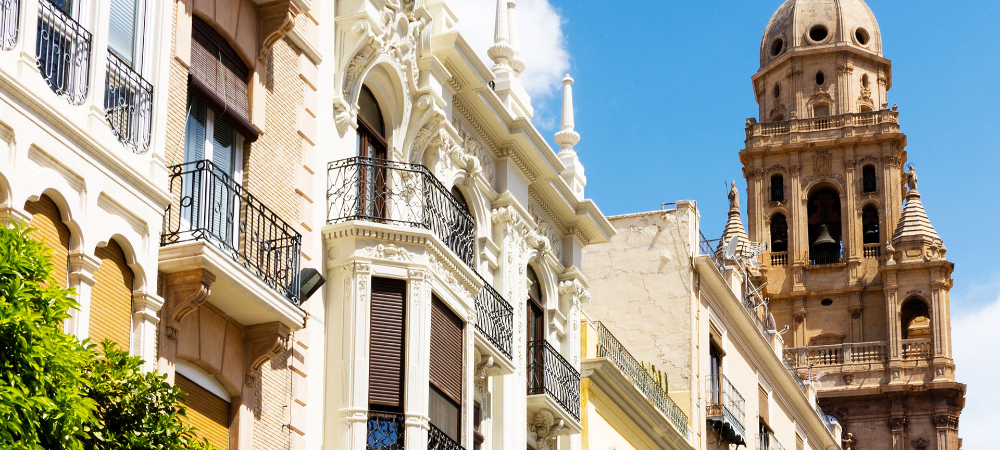

Murcia
VIDEOS
La Región de Murcia es una comunidad autónoma de España conocida por su clima mediterráneo, sus playas espectaculares y su rica oferta cultural. Desde las cálidas aguas del Mar Menor hasta los históricos yacimientos romanos de Cartagena, Murcia ofrece una experiencia única para cada visitante. La región es famosa por su gastronomía, destacándose platos como el zarangollo, el caldero y las frutas y verduras frescas de su huerta.
Las ciudades y pueblos de la Región de Murcia, como la ciudad de Murcia, Cartagena y Lorca, reflejan una mezcla de tradición y modernidad, con monumentos históricos, museos y una vibrante vida nocturna. La vida cultural murciana es rica y diversa, con eventos como las Fiestas de Primavera en Murcia y la Semana Santa en Cartagena, que atraen a visitantes de todo el mundo.
Además, la Región de Murcia ofrece numerosas oportunidades para actividades al aire libre, como el senderismo en el Parque Natural de Sierra Espuña, el buceo en las aguas cristalinas de Cabo de Palos y la exploración de sus bodegas y viñedos en la Ruta del Vino de Jumilla. Ya sea en sus animadas ciudades o en sus impresionantes paisajes naturales, la Región de Murcia ofrece experiencias inolvidables para todo tipo de viajeros.